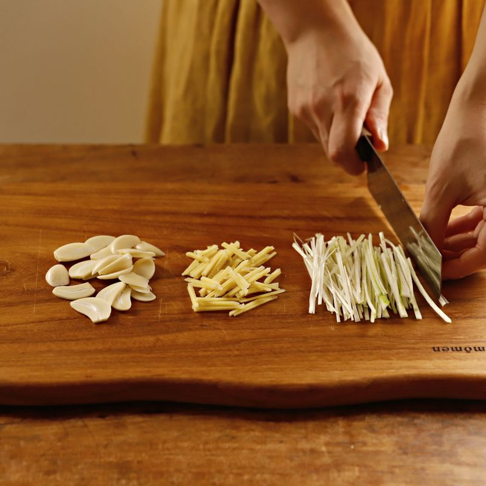
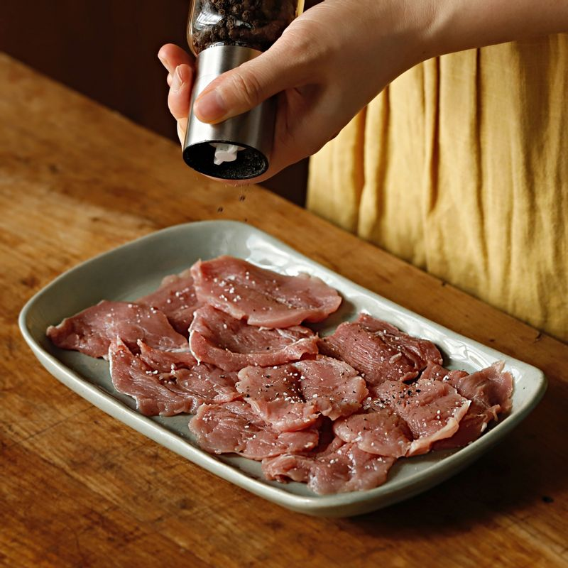
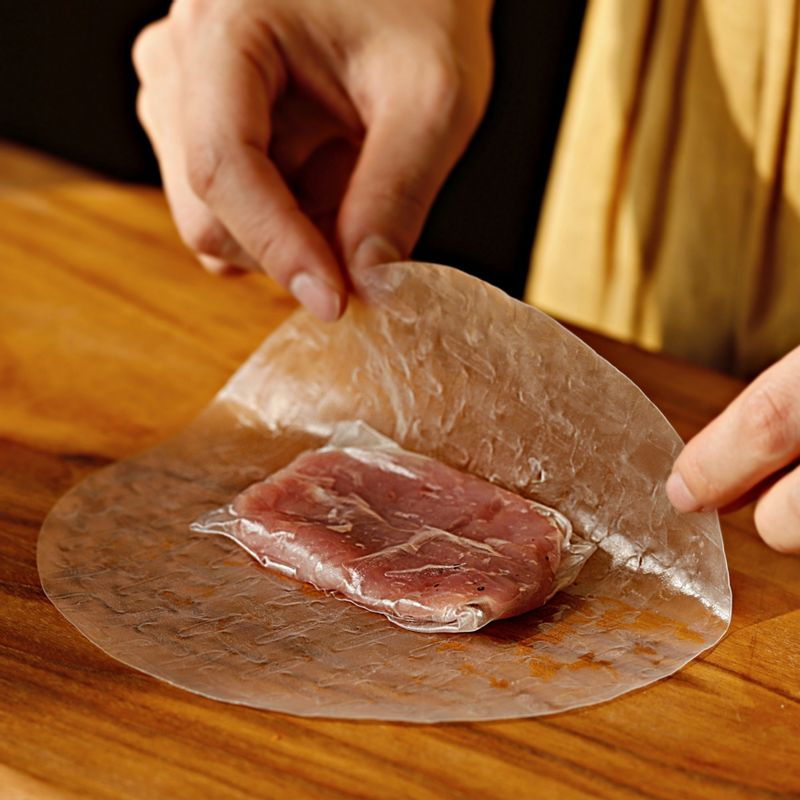
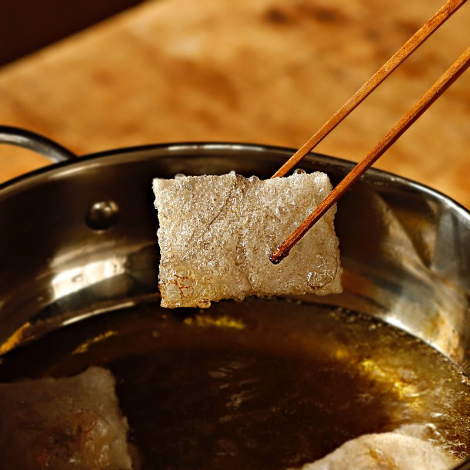
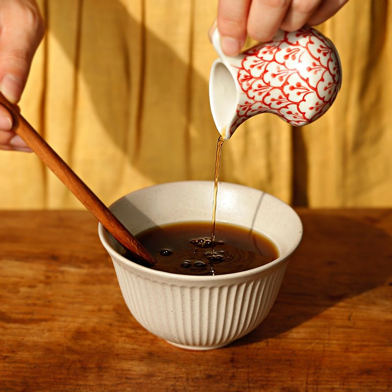
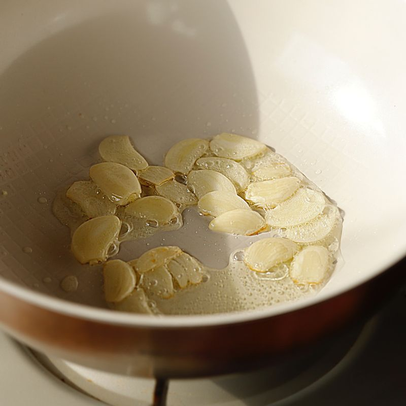

-

대파와 생강은 채를 썰어주세요. 마늘은 편 썰어주세요.
-

돼지고기 등심은 얇게 썰어주세요. 소금, 후추, 맛술을 뿌려 10분간 밑간해 주세요.
-

라이스페이퍼를 물에 적셔 펼친 후 수분이 충분히 스며들었을 때 등심을 넣고 감싼 후 라이스페이퍼에 한 번 더 감싸주세요.
-

냄비에 식용유를 넣어 160도로 예열해주세요. 라이스페이퍼로 감싼 등심을 넣어 1~2분간 튀겨주세요.
-

볼에 전분 물을 제외한 소스 재료를 넣고 섞어주세요.
-

냄비에 식용유 2큰술을 두른 후 마늘을 넣어 볶다가 소스를 붓고 끓여주세요. 소스가 끓어오르면 채를 썰어둔 생강과 대파를 넣고 30초 정도 끓여주세요.
-
튀겨낸 꿔바로우를 접시에 담고 소스를 부어 맛있게 즐겨주세요.